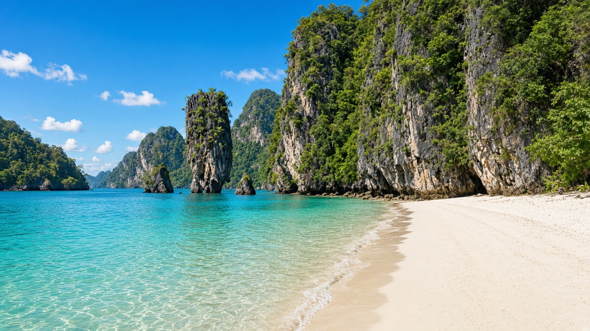
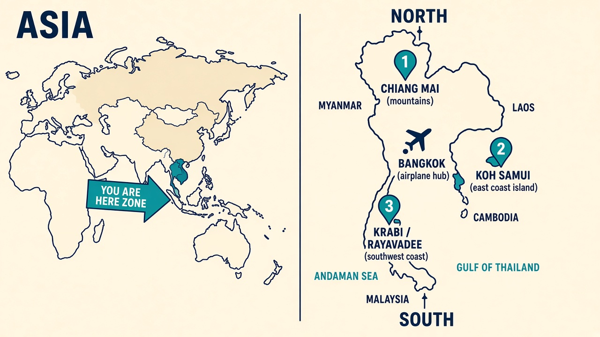
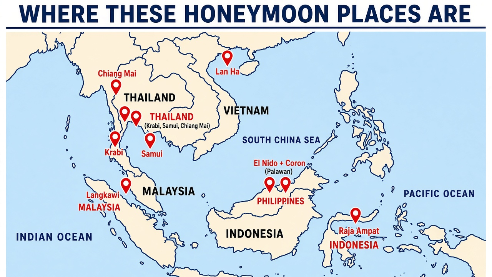
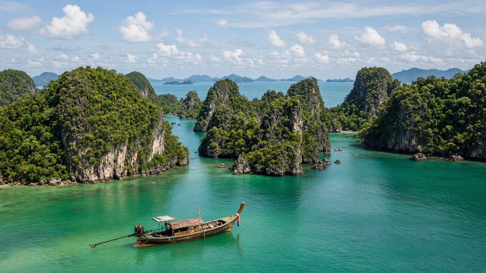
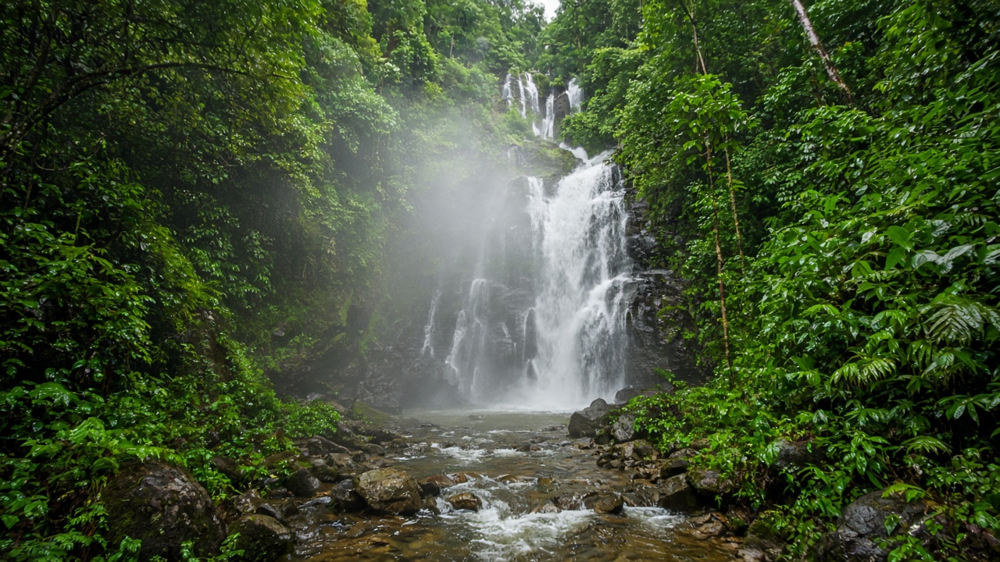
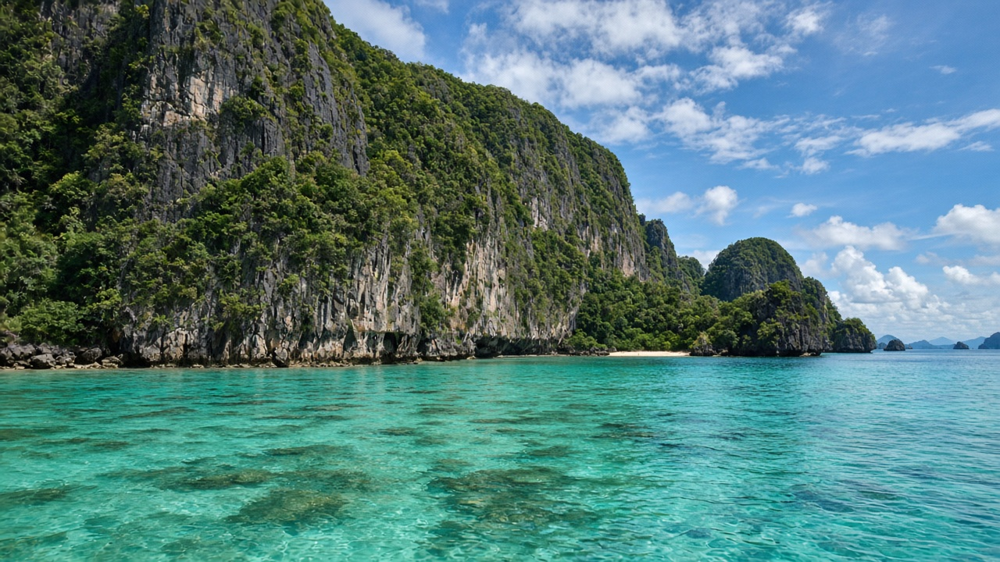
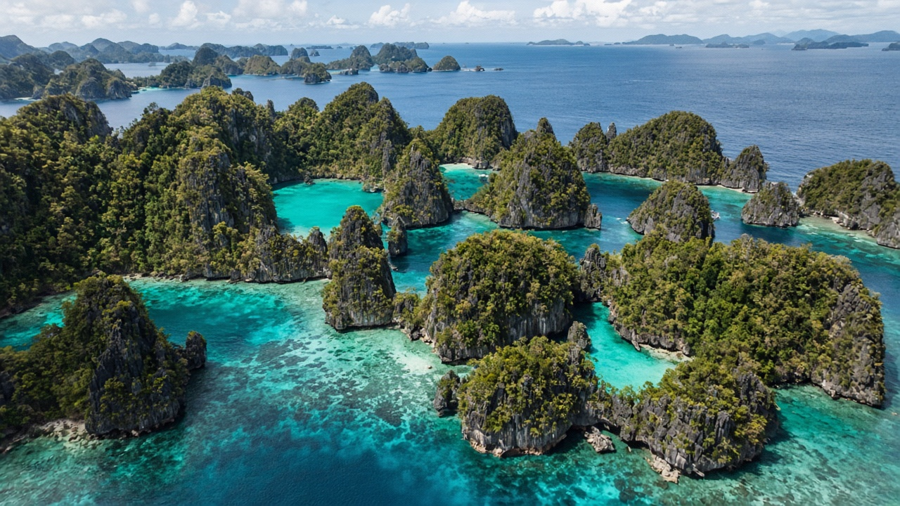

Click to browseKrabi / Rayavadee / Railay
The cliff + turquoise look. Luxury honeymoon anchor.
Click any photo to flip through ideas. Thailand route first, then other “cliff + jungle + ocean” places. August 2027 friendly notes included.



Click to browseThe cliff + turquoise look. Luxury honeymoon anchor.

Click to browseBetter August swimming + wild limestone island day trip.

Click to browseJungle, waterfalls, temples, food — adventure break from beach.

Click to browseClosest twin to Rayavadee cliffs & secret lagoons.
Kayangan Lake, Twin Lagoon, rawer / often cheaper than El Nido.

Click to browseRemote mushroom karsts — edge-of-the-map honeymoon.
Ha Long–style limestone islands; more boat-bay than beach resort.
Jungle + some karsts, easier logistics, less jaw-drop than Palawan/Krabi.